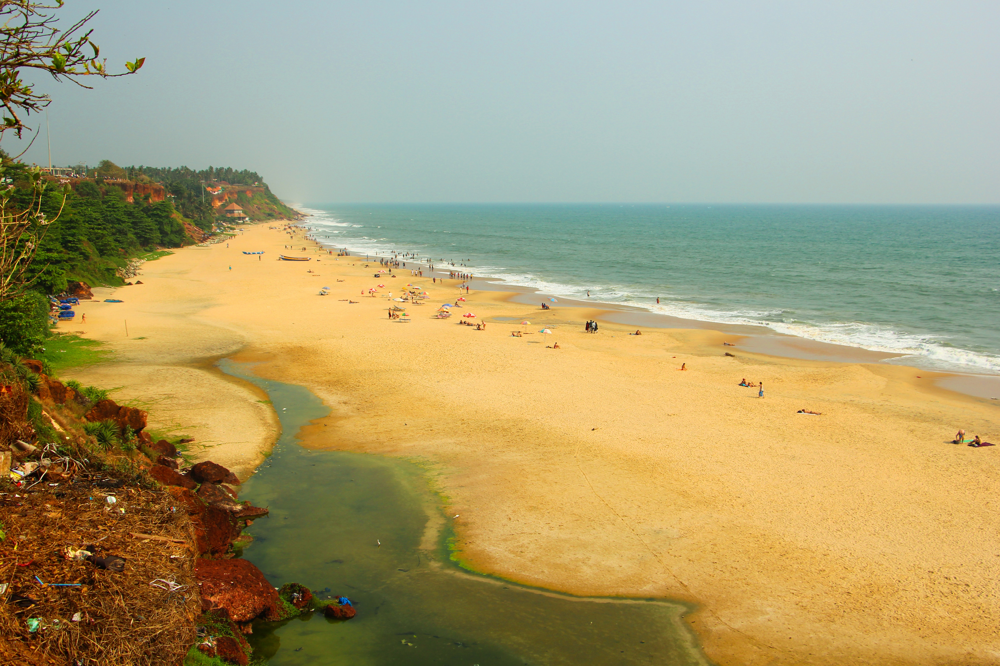
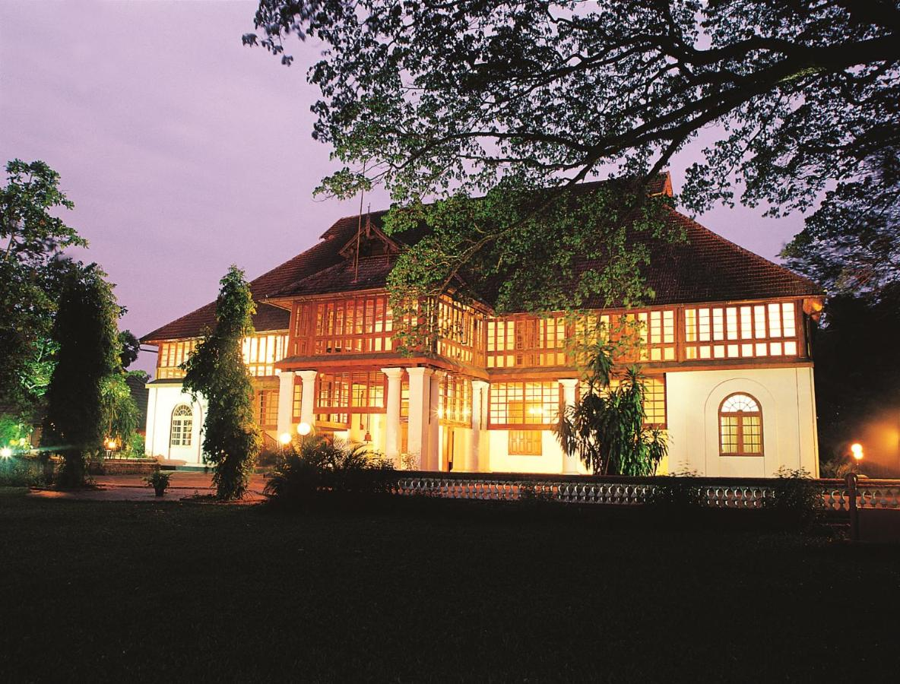

Munnar, Idukki
One of the most beautiful tea plantations in the world

Varkala, Trivandrum
Safest and most popular beach in Kerala with an unmatched view of Sunset from the Cliff

Bolgatty, Ernakulam
Ernakulam is known for its rich cultural heritage and is home to many historical landmarks such as the Hill Palace Museum, the Dutch Palace, and the Bolgatty Palace.